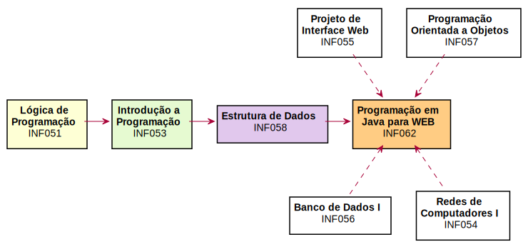

Programação em Java para Web
O que você precisa saber sobre a disciplina
Prof. Wagner Macedo

Você chegou até aqui!

O caminho trilhado...
Professor
- Mestre em Ciência da Computação UFS
- Graduação e Especialização Fanese
- Desenvolvedor de Software
Avisos
Os avisos serão feitos através do
Mural de Recados do Acadêmico.
## O que você irá aprender
- Como a web funciona.
- Construir aplicativos web utilizando Java.
- Programação web **tradicional**
- Programação web **AJAX**.
- Utilizar o padrão de projeto **MVC**.
- Separar o lado cliente do lado servidor.
O que você irá usar
Tecnologias
- Java EE
- SQL
- HTTP
- HTML + CSS
- JavaScript
Ferramentas
- IDE NetBeans
- Servidor Tomcat
- Browser web
- Google Chrome
- Mozilla Firefox
Divisão dos conteúdos
Unidade 1
- Fundamentos de programação web
- Java Servlets
- JavaServer Pages (JSP)
- Separação lógica do código-fonte
Unidade 2
- Programação AJAX
- Camada de dados
Unidade 3
- Autenticação
- Autorização
- Projeto individual
Como serão as aulas
- Teóricas
- Preleções em sala de aula.
- Assimilação do conteúdo.
-
Práticas
- Atividades em laboratório.
- Fixação do conteúdo.
Pontualidade
Tolerância de 10 minutos para início.
Faltas
Máximo de 25% (15 faltas)
Avaliação
- 30%
- Atividades pontuadas.
- Questões objetivas e dissertativas.
- 70%
- Provas da unidade.
- Prática de programação.
Cronograma
| Atividade pontuada 1 | 18/08
|
| Atividade pontuada 2 | 28/08
|
| 1ª Prova | 11/09
|
| Atividade pontuada 3 | 29/09
|
| Atividade pontuada 4 | 20/10
|
| 2ª Prova | 30/10
|
| Atividade pontuada 5 | 17/11
|
| 3ª Prova | 11/12
|
## Dúvidas?
**Este slide pode ser encontrado em:**
http://prof.wagnermacedo.com/2017-2/pjw/1